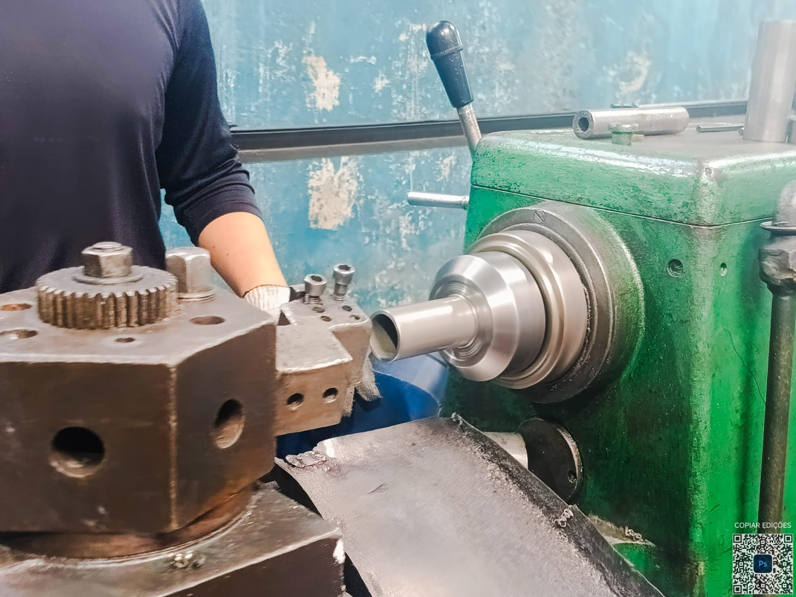
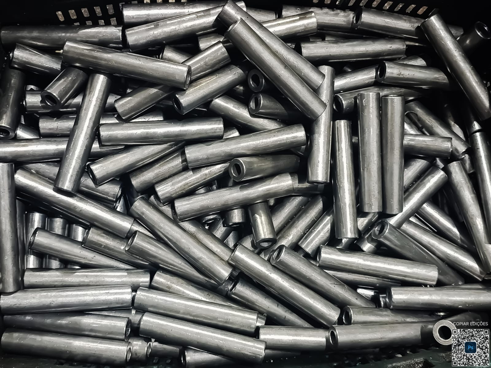
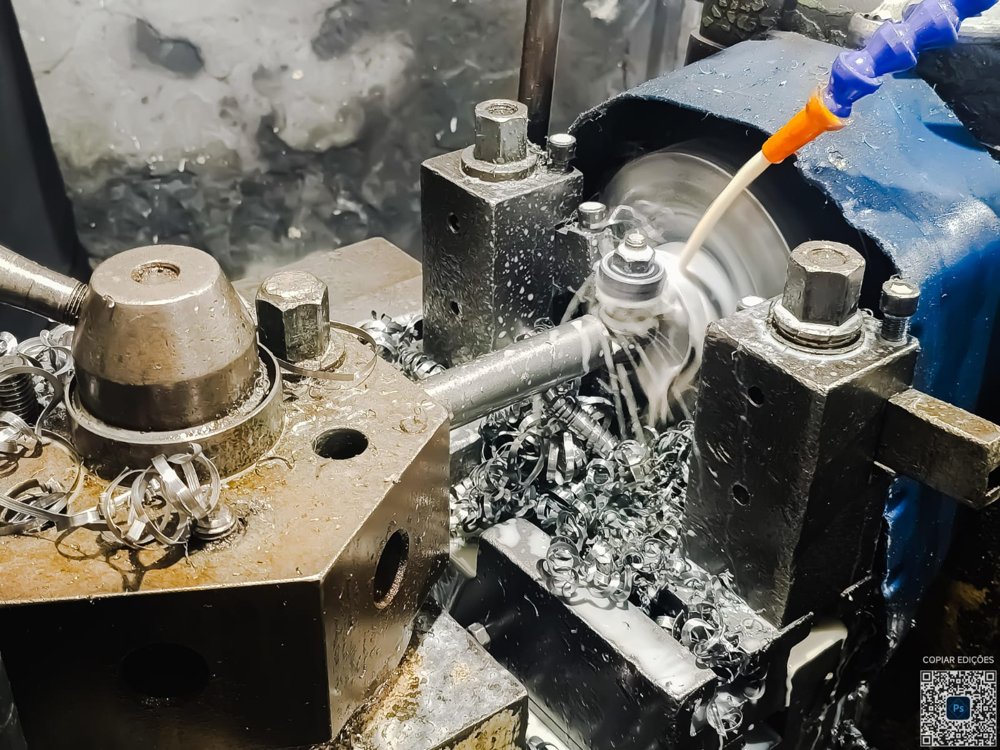
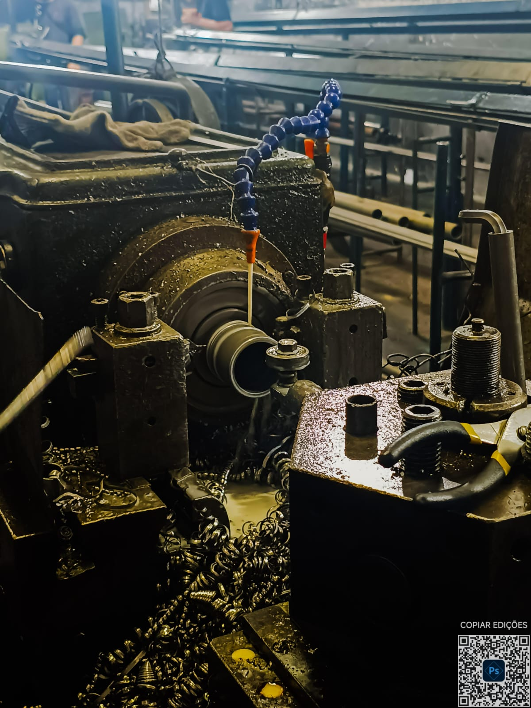

A JJ Usinagem atua na fabricação de peças mecânicas, ferramentaria e serviços de tornearia convencional, automática e revólver, atendendo empresas que buscam qualidade, precisão e compromisso com prazos.
Trabalhamos com equipamentos de boa qualidade e profissionais qualificados para entregar máxima precisão e excelência.

Fabricação, ajuste e recuperação de ferramentas e componentes utilizados em processos industriais.

Produção de peças mecânicas conforme desenho, amostra ou especificação técnica do cliente.

Serviços de torneamento para fabricação, recuperação e ajuste de componentes mecânicos.

Operações de acabamento e preparação de furos, garantindo melhor encaixe e funcionalidade das peças.
Projetos executados com máxima atenção aos detalhes técnicos.
Produção eficiente com foco em produtividade e prazo.
Controle rigoroso para garantir excelência em cada entrega.
Recebemos sua necessidade e analisamos o projeto.
Avaliação técnica detalhada para melhor solução.
Fabricação realizada com precisão e tecnologia.
Entrega com qualidade e compromisso com prazos.
Solicite um orçamento personalizado e fale com nossa equipe.
Solicitar orçamento